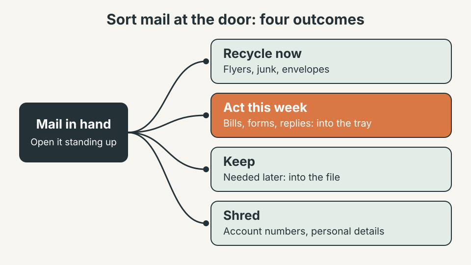
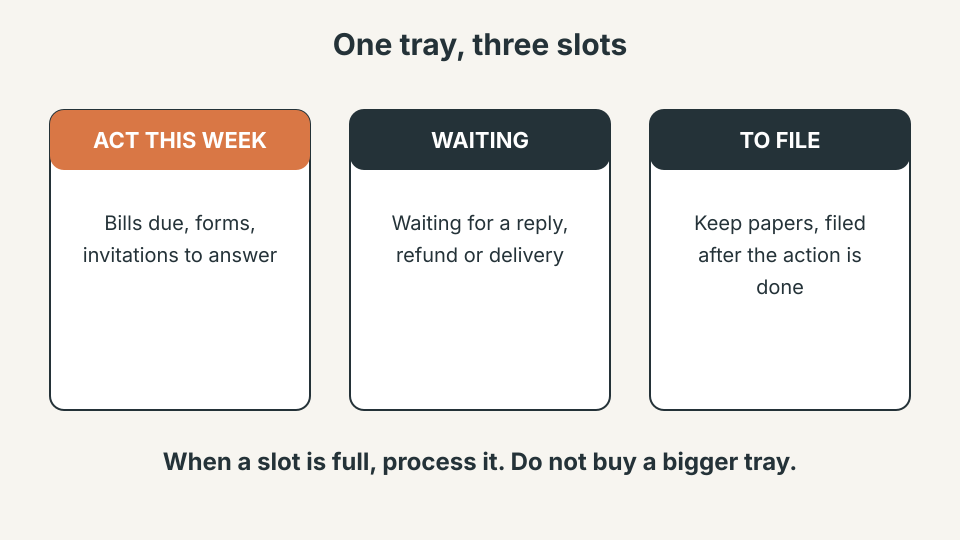
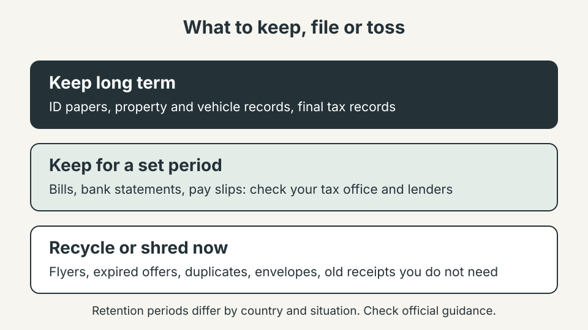
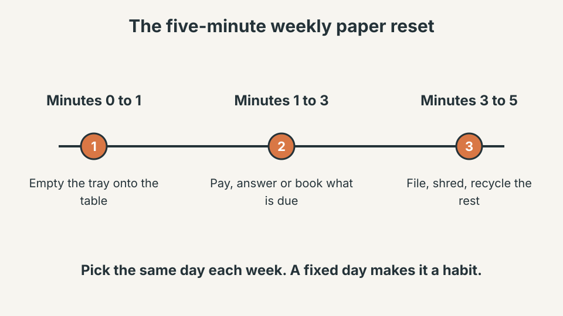

STORAGE & ORGANIZATION · PAPER AND MAIL
How to Stop the Mail and Paper Pile on Your Counter
The pile is rarely a storage problem. It grows because mail and papers arrive without a decision attached to them. Decide what each piece is the moment it comes in, give the few that need action one small home, and the counter stays clear.
Quick answer
The short version: make the decision at the door, not on the counter.
- At the door: sort every piece into one of four outcomes: recycle, act this week, keep or shred.
- One tray: three slots (act this week, waiting, to file) and nothing else.
- Filing: keep only what you may need later, in one simple folder system.
- Weekly: a five-minute reset on a fixed day to empty the tray.
These are starting points. Adjust the slots and the day to fit how your household actually handles paper.
1. Sort the mail at the door
Open the mail standing up, next to a recycling bin, before it reaches the counter. Each piece gets exactly one outcome: recycle it, put it in the tray because it needs action this week, keep it for the file, or shred it if it shows personal details. The key is that nothing is set down “for later”, because that is how a pile starts. A bin by the door, even a small one, makes the recycle choice the easiest one.

2. Give action papers one small tray
Bills, forms and replies that need action belong in one tray with three slots: act this week, waiting and to file. Waiting holds anything where you expect an answer, a refund or a delivery. Keep the tray small on purpose: when it is full, the answer is to process it, not to buy a bigger one. A tray near the place where you usually pay bills or answer email works better than one hidden in a drawer, because you will see it.

3. File only what you must keep
Most paper does not need a folder. Keep identity papers, property and vehicle records, and the records that matter for taxes and insurance. For bills, statements and pay slips, the right period depends on your country and your situation, so check official guidance before you decide, for example from the tax authority in your country such as the IRS in the US or GOV.UK in the UK. When a rule is unclear and a paper might matter, keep it a little longer, ideally as a scan in one digital folder.

4. Run a five-minute weekly paper reset
The weekly reset is what keeps the system honest. Pick a fixed day, empty the tray onto a table, deal with what is due, then file, shred or recycle the rest. If the reset regularly takes much longer, the tray is collecting too much, so go back to step one and sort harder at the door.

5. Reduce what arrives in the first place
Every piece you stop receiving is one less decision. Moving the biggest senders to online statements helps, and so does opting out of direct marketing. In the US, DMAchoice lets you manage commercial mail and OptOutPrescreen covers prescreened credit and insurance offers. In the UK, the Mail Preference Service does a similar job for unaddressed and addressed advertising. Opting out takes a few minutes and results vary, so do it once and check back after a few weeks.
6. Common mistakes
- Setting mail on the counter “for now”. The counter is where decisions go to wait.
- Filing everything. A filing system full of junk is just a slower pile.
- Several piles. One tray is a system; three piles in three rooms is a mess.
- Tossing sensitive papers whole. Shred anything with account numbers or personal details.
What not to buy yet
- A large filing cabinet before you have seen how much you actually keep.
- A fancy desk organizer. A plain three-slot tray is enough.
- A scanner subscription before you have decided which papers are worth scanning.
Quick win (10 minutes)
- Place a small recycling bin or bag where the mail comes in.
- Put one tray where the pile usually forms and label three slots: act this week, waiting, to file.
- Sort the current pile once using the four outcomes: recycle, act, keep, shred.
- Choose a weekly reset day and put it in your calendar.
Frequently Asked Questions
Where should incoming mail go?
Pick one spot near the door and sort it standing up. Anything that needs action goes in the tray, everything else is recycled, shredded or filed right away.
How often should I sort paper?
Sort at the door every day, which takes seconds, and empty the tray once a week. The daily step stops the pile and the weekly step finishes the work.
Which papers should I shred?
Shred papers that show account numbers, full names with addresses or other personal details. Local guidance varies, so check your own authority if you are unsure.
How long should I keep bills and bank statements?
It depends on your country, your taxes and your lenders. Check official guidance, such as the tax authority in your country, before you toss anything that might matter.
Is going paperless worth it?
It can cut the flow a lot, but it needs one clear digital folder and a reminder for due dates. Start with the biggest senders and keep paper only for what you must hold.
Sources
- DMAchoice (US direct mail opt-out)
- OptOutPrescreen (US prescreened offers)
- Mail Preference Service (UK)
- IRS and GOV.UK for official record-keeping guidance
A paper pile is a decision problem, not a storage problem. Decide at the door, give action papers one small home and empty it on a fixed day. When the system is easy enough to run while carrying groceries, it is easy enough to keep.